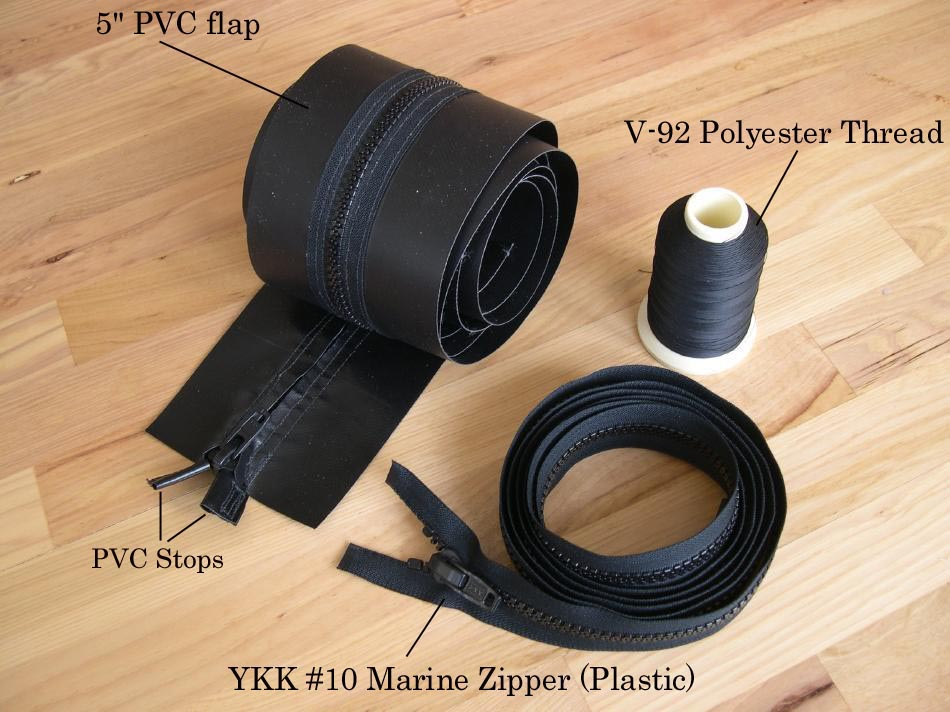

| Zipper to Stem Attachment ( 2 of 11 ) | Menu Previous Page Next Page |
|

Zipper Components - The zipper is a YKK #10 marine plastic zipper ( Seattle Fabrics). A single "slide" is used for less bulk (Seattle Fabrics). The flap is a 5" wide section of PVC ( Mauritzon). The thread is V-92 polyester ( Sailrite). The 1" PVC stops are sewn on. The zipper is sewn to the back (non-glossy) side of the PVC. The PVC flap/zipper is then glued to the deck with the dull side facing the deck. ( See contacts page)
|
|